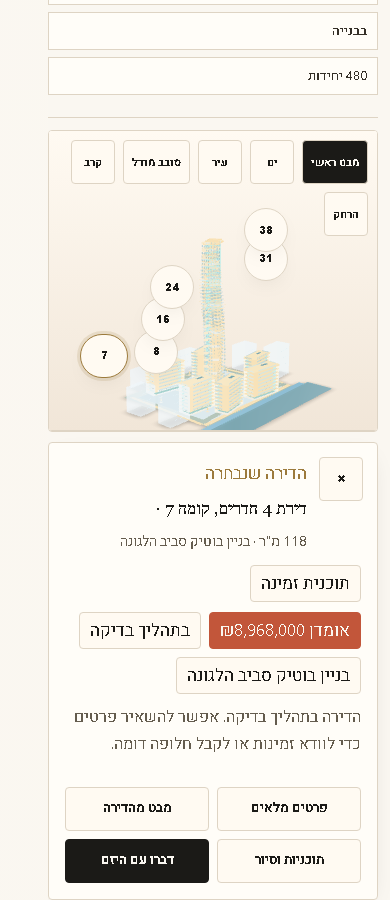
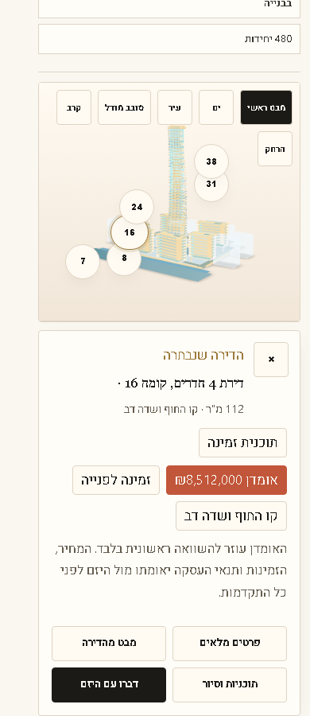
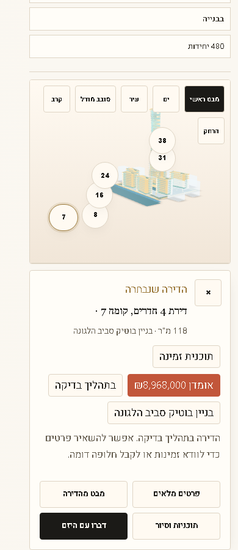

Rainbow showroom critical apartment selection QA
Live version checked: nadlan-config 1.69.23. Tests ran on the public Rainbow page on desktop 1440px and mobile 390px.
Pass for authored unit targets and nearest-unit model-surface selection
What passed
- All six visible apartment targets selected the expected unit on desktop and mobile.
- The mesh-surface test hit
MODEL-VIEWER, received real 3D hit positions, selected the expected nearest authored unit, moved the camera, and opened the unit card. - The mobile nine-point grid had no dead model-surface points.



Honest limitation
This does not prove exact click-any-window apartment picking. The current Rainbow GLB does not expose apartment-level mesh IDs or official BIM geometry. Exact window or facade polygon selection requires contractor source data: apartment-level GLB meshes, BIM or IFC mapping, or an official facade and unit map.